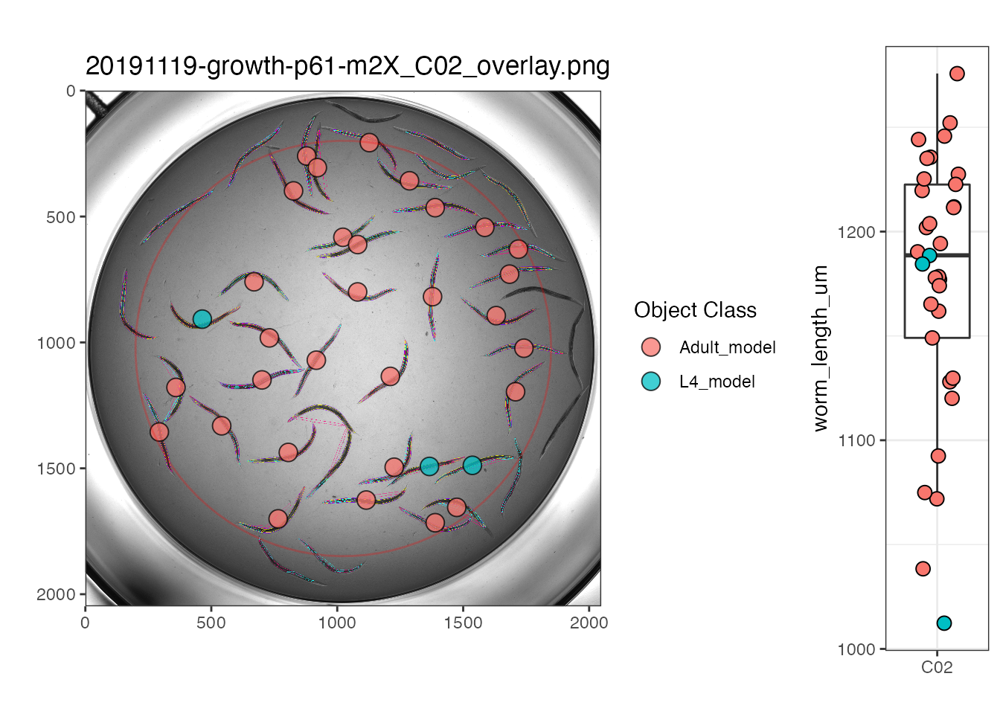
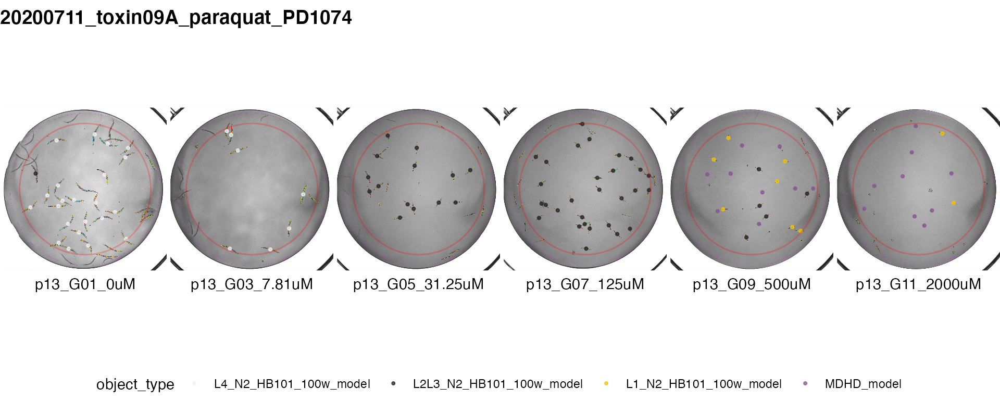

A walk-through of easyXpress
easyXpress.RmdIntroduction
easyXpress is an R package to read, process, and analyze worm data acquired from the Molecular Devices ImageExpress Nano Imager and processed with CellProfiler’s WormToolbox. It provides functions for reading, flagging, and pruning data. Additional functionalities are available for visualizing plate and well images, as well as displaying dose response data.
The complete easyXpress package consists of nine functions: readXpress, modelSelection, edgeFlag, setFlags, process, Xpress, viewPlate, viewWell, and viewDose.
Below is a detailed walk through applying the easyXpress package to a sample dataset generated by CellProfiler. For details regarding the generation of the data used here, see Andersen Lab Image Analysis Pipeline.
Reading in data: readXpress()
This is the primary function for reading CellProfiler data into R with this package.
readXpress() takes a path to a project directory with CellProfiler data files as an argument. This directory should have CellProfiler data in a sub-folder named cp_data. The file(s) must be in .RData format*. To specify the specific .Rdata file to be analyzed, set the rdafile argument to the name of the particular file of interest. If design = TRUE, a design file will be joined. The design file should be located in a sub-folder of the experimental directory named design. If design = FALSE, no design file will be joined.
This function will output a single data frame containing all CellProfiler model outputs as well as experimental treatments if a design file is used.
For more information regarding directory structure, see R/easyXpress.
*if you wish to analyze data not in .RData format, ensure that your data meets the following criteria:
- Can be treated as a data frame.
- Contains a column named
worm_length_umwith worm length in units of microns.
- Contains a column named
modelwith proper designation of model information associated for each object measured.
## In this example, there is no design file. As such, the argument design = FALSE
# Define experimental directory and file name
dirs <- rprojroot::find_package_root_file("vignettes", "example_data")
datafile <- "CellProfiler-Analysis_20191119_example_data.RData"
# Read in the data
raw <- easyXpress::readXpress(filedir = dirs, rdafile = datafile, design = FALSE)| Metadata_Experiment | Metadata_Plate | Metadata_Well | Image_FileName_RawBF | model | worm_length_um |
|---|---|---|---|---|---|
| growth | p05 | C03 | 20191119-growth-p05-m2X_C03.TIF | L1 | 276.8079 |
| growth | p05 | C03 | 20191119-growth-p05-m2X_C03.TIF | L1 | 261.1386 |
| growth | p05 | C03 | 20191119-growth-p05-m2X_C03.TIF | L1 | 240.1492 |
| growth | p05 | C03 | 20191119-growth-p05-m2X_C03.TIF | L1 | 206.4130 |
Selecting appropriate model: modelSelection()
modelSelection() takes as an argument the raw data output from the readXpress() function. It will assign the appropriate CellProfiler model to each primary object in the data frame.
In this example, the data was generated using 4 worm models: L1, L2L3, L4, and Adult.
model_selected <- easyXpress::modelSelection(raw)| well.id | Metadata_Experiment | Metadata_Plate | Metadata_Well | Parent_WormObjects | Adult | L1 | L2L3 | L4 |
|---|---|---|---|---|---|---|---|---|
| growth_p05_C03 | growth | p05 | C03 | 12 | 0 | 1 | 0 | 0 |
| growth_p05_C03 | growth | p05 | C03 | 14 | 0 | 1 | 0 | 0 |
| growth_p05_C03 | growth | p05 | C03 | 16 | 0 | 1 | 0 | 0 |
| growth_p05_C03 | growth | p05 | C03 | 17 | 0 | 1 | 0 | 0 |
Notice that additional columns (shown above) are added to the data frame. This provides information about the number of objects per model identified for each observation. In cases where 2 or more objects are idenfied for a single model, this is specified as a cluster and noted under model_flag
Setting flags
The next two steps involve adding multiple flags to the data.
Well edge flags: edgeFlags()
This function flags worms near the well edge, thus marking observations that may fall in regions with uneven illumination.
edgeFlag() takes as input the standard output from the modelSelection() function. Three additonal arguments may be user defined:
-
radius- the radius (in pixels) away from the image center with even illumination. Set at 825 by default. -
center_x- the center x position of the image. Set at 1024 by default -
center_y- the center y position of the image. Set at 1024 by default
This function returns a single data frame with worm objects at the edge of the well identified, but retained.
edge_flagged <- easyXpress::edgeFlag(model_selected, radius=825, center_x=1024, center_y=1024)Cluster & outlier flags: setFlags()
This function flags all suspect data points within wells.
setFlags() takes data following edgeFlag as input and outputs a single data frame containing all identified flags (i.e. worm cluster flag, well edge flag, well outlier flag). Two additonal arguments may be user defined:
-
cluster_flagLogical parameter; do you want worm objects in a cluster to be excluded when calculating well outliers? We recommend TRUE as the default. -
well_edge_flagLogical parameter; do you want worm objects in close proximity to the well edge to be excluded when calculating well outliers? We recommend TRUE as the default.
A single data frame containing all CellProfiler model outputs and flags is returned.
raw_flagged <- easyXpress::setFlags(edge_flagged, cluster_flag = TRUE, well_edge_flag = TRUE)
#> [1] "FILTERING BOTH CLUSTER AND WELL EDGE FLAGS"Process and summarize: process()
process() takes as an argument the flagged data output from the setFlags() function. It will output a list containing four elements: raw data, processed data, and summaries for both datasets.
- The raw data list item will be identical to the output from the
readXpress()function.
- The processed data list item will be the raw data following removal of all identified flags from the
setFlags()function.
- The two summary outputs will be data after summarizing by supplied parameter
....
processed <- easyXpress::process(raw_flagged, Metadata_Plate, Metadata_Well)
#> [1] "SUMMARIZED BY Metadata_Plate" "SUMMARIZED BY Metadata_Well"| Length | Class | Mode | |
|---|---|---|---|
| raw_data | 137 | tbl_df | list |
| processed_data | 137 | tbl_df | list |
| summarized_raw | 17 | tbl_df | list |
| summarized_processed | 17 | tbl_df | list |
Wrapper function: Xpress()
We have also included a wrapper function that will run all of the above functions in the package. The user may choose to alter any input arguments or maintain the default. The user must specify:
- Experimental directory
- Rdafile name to be analyzed
- Variable(s) used to summarize data in
...(seeprocess()function)
processed <- easyXpress::Xpress(filedir = dirs, rdafile = datafile, Metadata_Plate, Metadata_Well)
#> [1] "FILTERING BOTH CLUSTER AND WELL EDGE FLAGS"
#> [1] "SUMMARIZED BY Metadata_Plate" "SUMMARIZED BY Metadata_Well"Visualize Data
There are three functions for visualizing proccessed data generated by the process() or Xpress() functions.
Plate view: viewPlate()
viewPlate() takes as input summarised data output from the process() function. Either the raw or processed data can be viewed. The user must specify the plate to be analyzed.
This function will output a plotly object with the selected plate information displayed.
## This example uses a new dataset. Reading & processing of this dataset is not shown ##
# To start, save summarized_processed list element to new variable:
# processed_plate_data <- processed[[4]]
# view plate
easyXpress::viewPlate(processed_plate_data, "p61")Well view: viewWell()
viewWell() takes as input either the raw or processed unsummarized data output from process() or Xpress() as well as the full path of the directory holding the processed images. It returns a plot of the processed well image with object centroids colored by type. Optional argument boxplot = TRUE includes a boxplot of the objct data with the well image.
## This example shows the processed data
# Saving processed_data list element to new variable
proc_data <- processed[[2]]
# Define processed image directory
proc_img_dir <- rprojroot::find_package_root_file("vignettes", "example_data", "ProcessedImages")
easyXpress::viewWell(proc_data, proc_img_dir, "p61", "C02", boxplot = TRUE)
#> Warning: `guides(<scale> = FALSE)` is deprecated. Please use `guides(<scale> =
#> "none")` instead.
Dose Response view: viewDose()
viewDose() takes as input either the raw or processed unsummarized data output from process() or Xpress() and outputs representative processed well images with object centroids colored by type for each concentration of a drug.
The provided sample data does not include dose response information. For further information use the command ?viewDose to access the documentation.
## This example uses a new dataset. Reading & processing of this dataset is not shown ##
# Saving data elements to new variable
proc_dose_data <- processed_dose_data[[2]]
raw_dose_data <- processed_dose_data[[1]]
# Define processed image directory
proc_img_dir <- rprojroot::find_package_root_file("vignettes", "example_data", "ProcessedImages")
# View example images and object types from raw or processed dose response data
plot_proc <- easyXpress::viewDose(proc_dose_data, strain_name = "PD1074", drug_name = "paraquat", proc_img_dir = proc_img_dir)
plot_raw <- easyXpress::viewDose(raw_dose_data, strain_name = "PD1074", drug_name = "paraquat", proc_img_dir = proc_img_dir)
## showing processed dose response data only ##
plot_proc